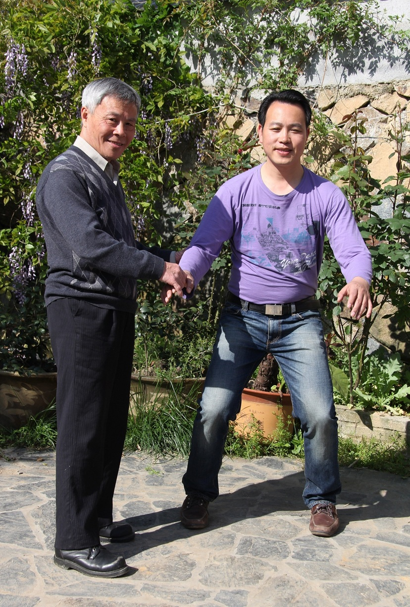
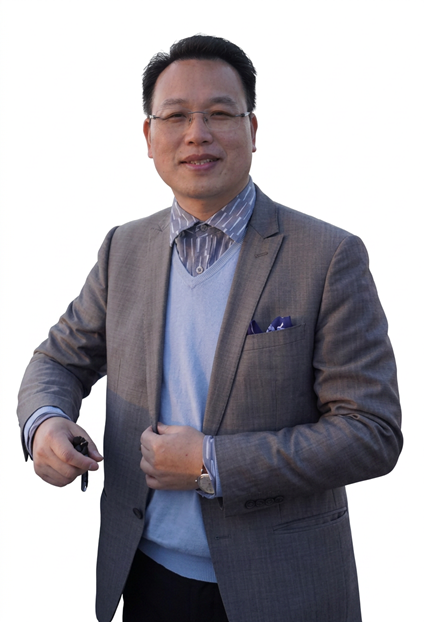

关于我们
我们的使命
通过传承正宗的内劲气功，帮助现代人缓解压力、强身健体、延年益寿。 传承背景：本门功法底蕴深厚，结合了传统中医理论与经络学说，通过调心、调息、调身来培植内气。
我们的愿景
将我们的知识与技艺传授给更多的人，让后代子孙也能从中受益。我们发自内心地渴望能够为大众提供健康关怀，并在欧洲乃至西方世界的许多地方，建立起一座座充满和平 与和谐的“绿洲”。我们衷心期盼，有朝一日我们的梦想能够成真——建立一座集庇护、希望与疗愈于一体的中心。



通过传承正宗的内劲气功，帮助现代人缓解压力、强身健体、延年益寿。 传承背景：本门功法底蕴深厚，结合了传统中医理论与经络学说，通过调心、调息、调身来培植内气。
将我们的知识与技艺传授给更多的人，让后代子孙也能从中受益。我们发自内心地渴望能够为大众提供健康关怀，并在欧洲乃至西方世界的许多地方，建立起一座座充满和平 与和谐的“绿洲”。我们衷心期盼，有朝一日我们的梦想能够成真——建立一座集庇护、希望与疗愈于一体的中心。

郑博音大师是少林内劲一指禅的第二十代传人。他出生于中医武术世家，自幼学习中医、医学气功、太极和传统武术，并师承阙阿水大师的嫡传大弟子姚金圣先生，潜心修炼三十余年。自1999年移居德国后，郑大师创立了“国际 内劲气功康复养生学院”，并设有三所专业诊疗与康复中心。他致力于传播身心健康之道，凭借深厚的功力帮助全 球数万人重获健康，同时培养了众多优秀的气功导师和康复治疗师。
人类总是通过效仿榜样——即“楷模”— 来进行学习。对我而言，自幼年起，我的榜样便是那些指引我前行之路的佛家与道家大 师们。我今日之所成、所知，皆归功于他们千百年来代代相传的智慧与学识。能被诸位大师选中，受命将这神圣的学问传播至西方 世界，对我而言是莫大的殊荣。我发自肺腑地感激他们对我的信任。
在众多师长中，我尤受姚金圣大师的影响。作为“少林内劲气功”（亦称“少林内劲一指禅气功”）的第十九代传人，他承袭了太 师祖阙阿水的衣钵— 正是阙太师祖在20世纪60年代率先打破陈规，将这门功法传授到了少林寺墙垣之外的广阔天地。多年来，姚 大师始终伴我左右，以其耐心、慈爱与充满智慧的幽默感循循善诱，教导我如何修养德行、提升能力。正是他最终正式任命我为该 功法的第二十代传人，并鼓励我远赴欧洲弘扬此道。令我倍感欣慰的是，我的许多弟子在赴华参访期间，已有幸得见姚大师本人， 并与其结下了善缘。
时至今日，仍有其他多位大师与师长在不断塑造着我的工作理念与思维方式。他们传授给我的学问包罗万象，其中包括少林功夫（罗汉神拳）的技艺，以及各类气功 功法与特殊的禅修练习。此外，我深怀感恩的是，近年来我有幸跟随藏传佛教大师们研习佛法，从而得以进一步深化我与佛教的内在联结。在他们的指引与帮助下， 灵性修持在我的生命中所占据的分量日益深重；他们引领我愈发清晰地洞察并领悟：在人生的旅途中，究竟何者才是真正至关重要的。我亦乐于将这些宝贵的体悟与 智慧，毫无保留地传授给我的弟子们。当然，我事业的另一重要根基，便是我的家庭。父母所给予我的深沉之爱与坚定支持，令我终生感念，获益良多。早在幼年时 期，他们便引导我接触并研习中国博大精深的哲学思想，以及气功与中医养生之道的传统精髓。他们教导我要对不同的宗教信仰、思维方式和生活方式保持宽容；同 时，他们也始终鼓励我坚持走属于自己的道路。每当我回中国探望父母时，我总是特别享受与母亲一同练习太极拳的时光，或是随父亲一同下乡的经历。
我深信，唯有通过在世间广行善举、乐于助人，人才能得以进化与成长。我们固然可以抱怨战争、暴力与不公——但若想获得改变现状的力量，唯有不断提升自身的 品德修养。慈悲、感恩与宽容，正是指引我们在这个时代前行的核心价值观；它们也是实现身心深层疗愈的内在动力。我内心深处的动力，在于帮助人们过上和谐、 健康的生活。我不仅深植于气功的修行之中，更长年研习传统中医（TCM）；这段历程教会了我：若要消除病痛与苦难，不应仅治标，更须治本。若要探究病因，至 关重要的一点，是将人视为一个由身、心、灵构成的统一整体，并考量其与社会环境及大自然之间的相互关系。正是这种“整体观”的思维方式，贯穿并指引着我所 有领域的工作实践。每当我能帮助他人重获和谐与宁静的生活时，我便感到由衷的喜悦。
自1999年以来，我一直定居德国，致力于向人们介绍具有预防与疗愈功效的正宗气功，并传授行之有效的自我疗愈方法。在此期间，已有超过15,000人参加过我的讲 座与研讨会；他们阅读了我的书籍与文章，其中一部分人甚至已成长为气功教师或气功理疗师。我希望能将我的知识与技艺传授给更多的人，让后代子孙也能从中受 益。我发自内心地渴望能够为大众提供健康关怀，并在欧洲乃至西方世界的许多地方，建立起一座座充满和平与和谐的“绿洲”。
我衷心期盼，有朝一日我的梦想能够成真— 建立一座集庇护、希望与疗愈于一体的中心。
